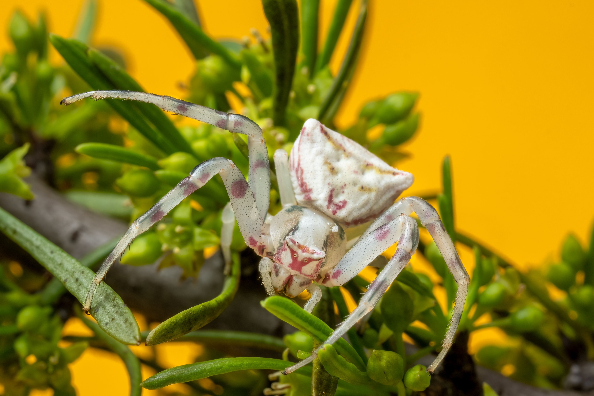
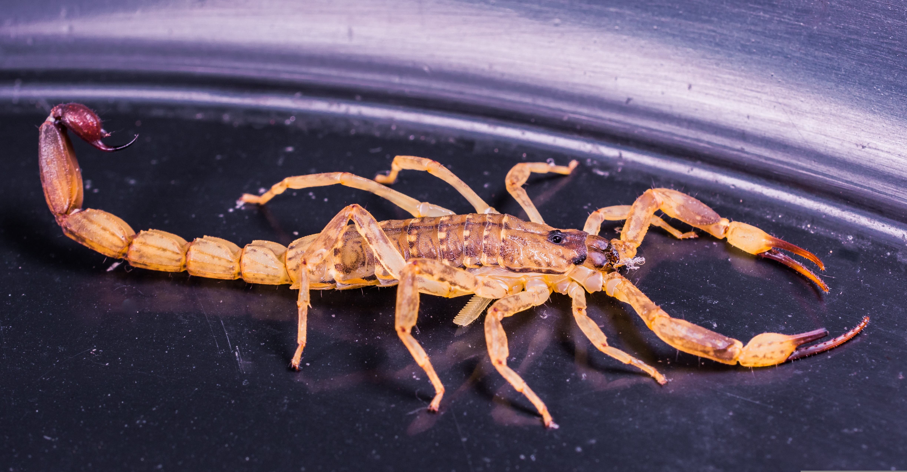
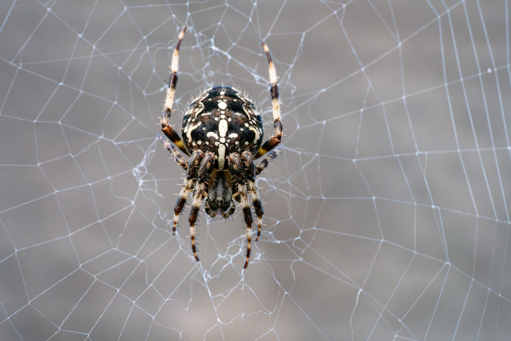
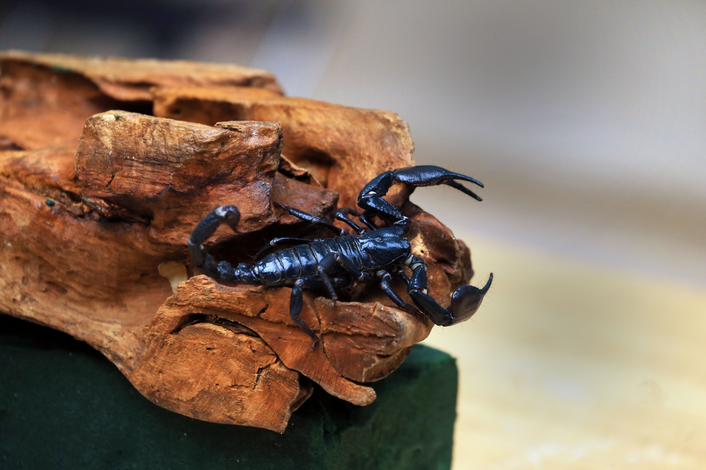
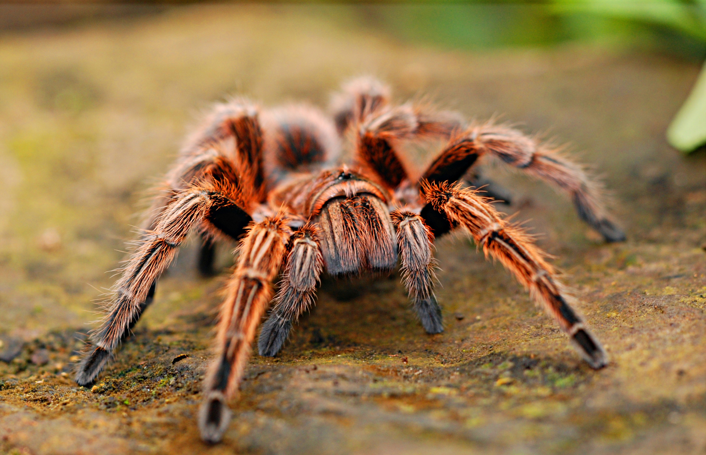
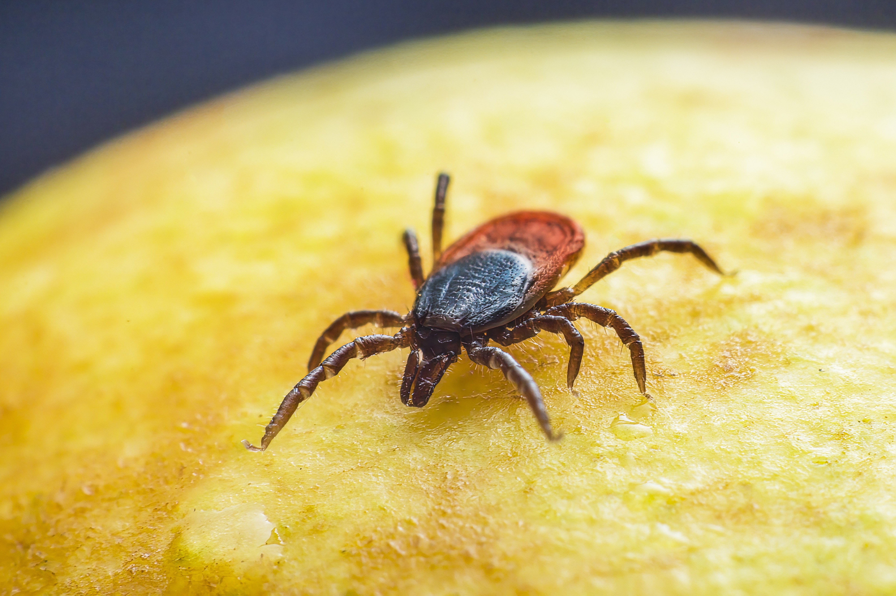
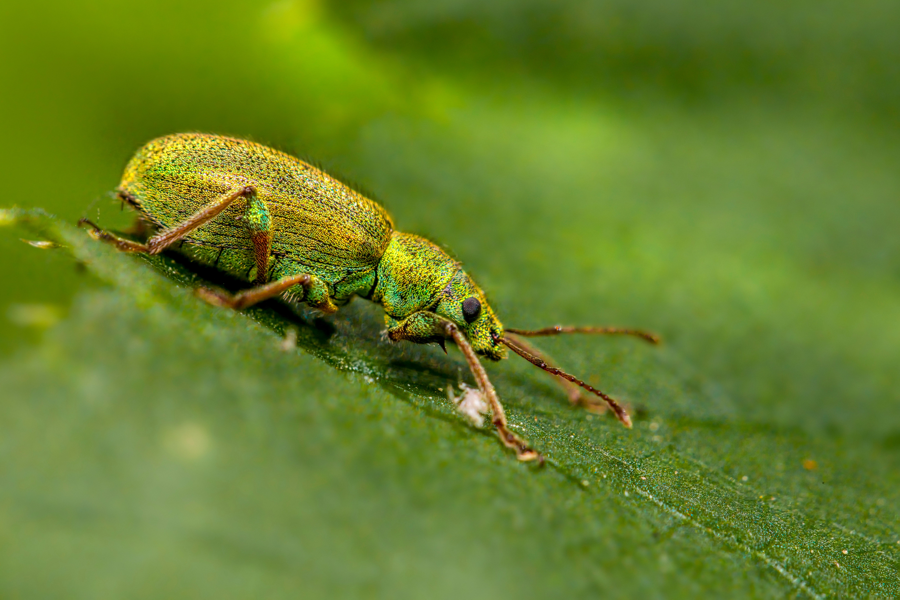

What are Arachnids?
Arachnids comprise a class of joint-legged invertebrate animals (Arachnida) that includes spiders, scorpions, ticks, and mites. Unlike insects, they lack antennae and wings, and their bodies are divided into two distinct segments rather than three.
As master terrestrial predators, arachnids play a critical environmental role by naturally managing insect populations across global ecosystems.
Key Characteristics
1. Eight Legs: All adult arachnids possess four pairs of walking legs (totaling eight legs), distinguishing them instantly from six-legged insects.
2. Two Main Body Segments: Their anatomy combines the head and thorax into a single cephalothorax, joined to an abdomen behind it.
3. Specialized Appendages: They use mouthparts called chelicerae (often equipped with fangs) and pedipalps for sensing surroundings, capturing prey, or handling food.

Meet the Arachnids
While over 100,000 species make up this diverse class, here are four iconic and recognizable representatives.

Orb-Weaver Spider
Master architects known for spinning breathtaking, symmetrical circular webs to catch flying insect prey.

Emperor Scorpion
A large, docile forest-dwelling scorpion featuring powerful pincers and a segmented tail equipped with a stinger.

Red-Knee Tarantula
A large, hairy ground spider celebrated for its striking leg markings and calm demeanor.

Black-Legged Tick
A specialized parasitic arachnid that feeds on the blood of vertebrate hosts in woodland environments.

Where Do Arachnids Live?
Arachnids are predominantly terrestrial creatures that have successfully adapted to almost every land ecosystem on Earth, thriving from tropical jungles to arid deserts.
What Do Arachnids Eat?
Almost all arachnids are strict carnivores that feed primarily on insects and other small animals.
Web-Hunting Predators
Spiders trap flying or crawling insects in silk webs, injecting digestive enzymes to liquefy prey before consuming it.
Ambush Hunters
Scorpions and tarantulas hunt actively at night, using powerful claws or venomous stingers to subdue live prey.
Parasitic Feeders
Ticks and certain mites feed strictly on the bodily fluids and blood of vertebrate host animals.
💡 Did You Know?
Spider silk is famously stronger than steel of the same thickness while remaining incredibly elastic and flexible!
Scorpions glow with a vibrant neon blue-green color when exposed to ultraviolet (UV) blacklight.
Arachnids cannot chew solid food; they liquefy their prey's internal organs using specialized digestive juices first.
Quick Facts
100,000+
Described arachnid species globally
Terrestrial
Found on every continent except Antarctica
Cephalothorax
Fused head and thorax body structure